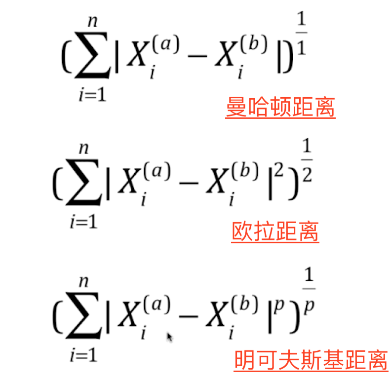

import numpy as np from math import sqrt from collections import Counter
defKNN_classify(k: int, x_train: np.ndarray, y_train: np.ndarray, x: np.ndarray) -> int: assert1 <= k <= x_train.shape[0], "k must be valid" assert x_train.shape[0] == y_train.shape[0], \ "the size of x_train must equal to the size of y_train" assert x_train.shape[1] == x.shape[0], \ "the feature number of x must be equal to x_train"
distant = [sqrt(np.sum((train_data - x) ** 2)) for train_data in x_train] nearest = np.argsort(distant) result = [y_train[i] for i in nearest] return Counter(result).most_common(1)[0][0]
def__init__(self, k: int): """初始化""" assert k >= 1, "k must be valid" self.k: int = k self._x_train: np.ndarray = None self._y_train: np.ndarray = None
deffit(self, x_train: np.ndarray,y_train: np.ndarray) -> 'KNNClassifier': assert1 <= self.k <= x_train.shape[0], "k must be valid" assert x_train.shape[0] == y_train.shape[0], \ "the size of x_train must equal to the size of y_train"
defpredict(self, x_predict: np.ndarray) -> np.ndarray: """给定预测数据集，返回预测结果""" assert self._x_train isnotNoneand self._y_train isnotNone, \ "must fit before predict" assert x_predict.shape[1] == self._x_train.shape[1], \ "the feature number of x must be equal to x_train"
y_predict: list = [self._predict(x) for x in x_predict] return np.array(y_predict)
def_predict(self, x: np.ndarray) -> int: """ 给定单个待预测的数据x，返回x的预测结果值 """ assert self._x_train.shape[1] == x.shape[0], \ "the feature number of x must be equal to x_train"
distant = [sqrt(np.sum((train_data - x) ** 2)) for train_data in self._x_train] nearest = np.argsort(distant) result = [self._y_train[i] for i in nearest[:self.k]] return Counter(result).most_common(1)[0][0]
deftrain_test_split(x_train: np.ndarray, y_train: np.ndarray, test_ratio=0.2, seed=None): """将数据X和y按照test_ratio分割成new_x_train, x_test, new_y_train, y_test""" assert x_train.shape[0] == y_train.shape[0], \ "the size of x_train must be equal to the size of y_train" assert0.0 <= test_ratio <= 1.0, \ "test_train must be valid"
defaccuracy_score(y_true: np.ndarray, y_predict: np.ndarray) -> float: assert y_true.shape[0] == y_predict.shape[0], \ "the size of y_ture must equal to to y_predict"
for i in range(1, 11): kc_tmp = KNeighborsClassifier(n_neighbors=i) kc_tmp.fit(train_x, train_y) score_tmp = kc_tmp.score(test_x, test_y) if score_tmp > best_score: best_score = score_tmp best_k = i print(best_score, best_k) # 0.9916666666666667 4
寻找最佳评估路径方法
是否考虑点距离的权重
1 2 3 4 5 6 7 8 9 10 11 12 13 14 15 16
best_score = 0.0 best_k = -1 best_method = ""
# 是否引入权重 for m in ["distance", "uniform"]: for i in range(1, 11): kc_tmp = KNeighborsClassifier(n_neighbors=i, weights=m) kc_tmp.fit(train_x, train_y) score_tmp = kc_tmp.score(test_x, test_y) if score_tmp > best_score: best_score = score_tmp best_k = i best_method = m print(best_score, best_k, best_method) # 0.9916666666666667 4 uniform
对距离的定义

寻找最佳距离在1-5之间
1 2 3 4 5 6 7 8 9 10 11 12 13 14 15 16 17 18
%%time best_score = 0.0 best_k = -1 best_p = -1 for i in range(1, 11): for p in range(1,6): # 对p进行设置 kc_tmp = KNeighborsClassifier(n_neighbors=i, weights="distance", p=p) kc_tmp.fit(train_x, train_y) score_tmp = kc_tmp.score(test_x, test_y) if score_tmp > best_score: best_score = score_tmp best_k = i best_p = p print(best_score, best_k, best_p) # 0.9888888888888889 3 2 # CPU times: user 14.5 s, sys: 21.1 ms, total: 14.5 s # Wall time: 14.6 s